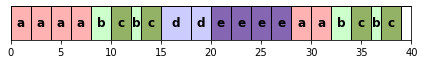
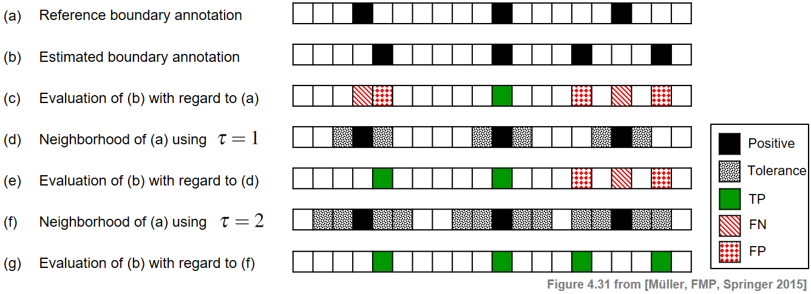

import librosa
import numpy as np
import matplotlib.pyplot as plt
from matplotlib.colors import ListedColormap
import IPython.display as ipd
from utils.plot_tools import plot_segments5.5. 음악 처리의 평가 방법
Evaluation of Music Processing
음악구조분석
평가지표
음악 구조에 대한 처리(예: 분할)가 얼마나 잘 되었는지를 평가하는 방법에 대해 알아본다.
이 글은 FMP(Fundamentals of Music Processing) Notebooks을 참고로 합니다.
주어진 음악 녹음에서 구조적인 정보를 추출하는 다양한 절차를 설명한 바 있다. 그러나 주어진 절차가 당면한 작업을 얼마나 잘 수행하는지 측정하는 문제에 대해서는 아직 논의한 바가 없다.
음악 처리 알고리즘을 (자동으로)평가하는 문제는 구조 분석을 넘어서 그 자체로도 중요한 작업이다. 일반적인 평가 방식은 자동화된 절차로 얻은 추정 결과(estimated result) 를 일부 참조 결과(reference result) 와 비교하는 것이다. 이러한 일반적인 접근 방식을 구현하려면 다음 질문에 대한 답을 찾아야 한다.
- 주어진 분석 결과는 실제로 어떻게 모델링되는가?
- 추정 결과를 참조 결과와 어떻게 비교해야 하는가?
- 참조 결과는 어떻게 구했으며 신뢰할 수 있는가?
특히 마지막 질문은 음악적 서술의 본질과 의미에 대한 철학적 고찰로 쉽게 이어진다. 예를 들어, 음악 구조 분석은 실제 음악 녹음에서 발생하는 음악적 및 음향적 변화 뿐만 아니라 다양한 요인에 의존하는 어려운 문제이다.
분석 결과는 음악적 맥락과 고려되는 시간적 수준에 크게 좌우되기 때문에 두 명의 전문가가 있다고 하더라도 주어진 음악에 대한 분석에 서로 동의하지 않을 수 있다. 브람스 예의 경우, 한 전문가는 음악적 구조 \(A_1A_2B_1B_2CA_3B_3B_4D\)가 되는 더 큰 규모의 구조에 주석을 달고, 다른 전문가는 부분이 더 세분화된 더 작은 규모를 고려할 수 있다.
다음 코드 셀에서는 세 가지 다른 축척에 대한 주석(annotation)의 예를 제공한다.
ann_Brahms = {}
ann_Brahms[0] = [[0, 16, 'G major'], [16, 28, 'G minor'], [28, 40, 'G major']]
ann_Brahms[1] = [[0, 4, 'A'], [4, 8, 'A'], [8, 12, 'B'], [12, 16, 'B'],
[16, 27, 'C'], [27, 32, 'A'], [32, 36, 'B'], [36, 39, 'B'], [39, 40, '']]
ann_Brahms[2] = [[0, 2, 'a'], [2, 4, 'a'], [4, 6, 'a'], [6, 8, 'a'],
[8, 10, 'b'], [10, 12, 'c'], [12, 13, 'b'], [13, 15, 'c'],
[15, 18, 'd'], [18, 20, 'd'],
[20, 22, 'e'], [22, 24, 'e'], [24, 26, 'e'], [26, 28, 'e'],
[28, 30, 'a'], [30, 32, 'a'],
[32,34, 'b'], [34, 36, 'c'], [36, 37, 'b'], [37, 39, 'c'], [39, 40, '']]
color_ann_Brahms = {'G major': [1, 0.8, 0, 0.3], 'G minor': [0, 0, 1, 0.3],
'A': [1, 0, 0, 0.3], 'B': [0, 1, 0, 0.3], 'C': [0, 0, 1, 0.3], '': [1, 1, 1, 0.3],
'a': [1, 0, 0, 0.3], 'b': [0, 1, 0, 0.2], 'c': [0.3, 0.5, 0, 0.6],
'd': [0, 0, 1, 0.2], 'e': [0.2, 0, 0.5, 0.6], '': [1, 1, 1, 1]}
figsize = (6,1)
for k in range(3):
plot_segments(ann_Brahms[k], figsize = figsize, colors=color_ann_Brahms); 
- 실제로 단순하고 때로는 문제가 있는 가정이지만, 일반적으로 전문가에 의해 유효한 참조 주석(annotation) 하나가 주어졌다고 가정한다. 이러한 주석은 종종 “ground truth”라고 한다. 자동화 절차의 목적은 가능한 이러한 참조에 가까운 주석을 추정하는 것이다.
Precision, Recall, F-Measure
많은 평가 지표들이 precision(정밀도), recall(재현율), 그리고 F-measure에 기반한다.
우선 \(\mathcal{I}\)를 아이템(items)이라고 하는 유한 집합이라고 하자.
- 각 아이템 \(i\in \mathcal{I}\)은 라벨 ‘\(+\)’ (positive or relevant) 혹은 라벨 ‘\(-\)’ (negative or not relevant)로 지정된다.
\(\mathcal{I}^\mathrm{Ref}_+\)를 양의 아이템, \(\mathcal{I}^\mathrm{Ref}_-\)를 음의 아이템의 집합이라고 하자.
\(\mathcal{I}^\mathrm{Est}_+\)를 양으로 추정된 아이템, \(\mathcal{I}^\mathrm{Est}_-\)를 음으로 추정된 아이템의 집합이라고 하자.
\(i\in\mathcal{I}^\mathrm{Est}_+\cap\mathcal{I}^\mathrm{Ref}_+\) 이면 true positive (TP)
\(i\in\mathcal{I}^\mathrm{Est}_+\cap\mathcal{I}^\mathrm{Ref}_-\) 이면 false positive (FP)
\(i\in\mathcal{I}^\mathrm{Est}_-\cap\mathcal{I}^\mathrm{Ref}_+\) 이면 false negative (FN)
\(i\in\mathcal{I}^\mathrm{Est}_-\cap\mathcal{I}^\mathrm{Ref}_-\) 이면 true negative (TN)
precision \(\mathrm{P}\)은 true positives의 수를 positive로 추정한 모든 아이템으로 나눈 것이다:
\[\mathrm{P} = \frac{|\mathcal{I}^\mathrm{Est}_+\cap\mathcal{I}^\mathrm{Ref}_+|}{|\mathcal{I}^\mathrm{Est}_+|} = \frac{\#\mathrm{TP}}{\#\mathrm{TP}+\#\mathrm{FP}}\]
recall \(\mathrm{R}\)은 true positives의 수를 전체 positive 아이템으로 나눈 것이다: \[\mathrm{R} = \frac{|\mathcal{I}^\mathrm{Est}_+\cap\mathcal{I}^\mathrm{Ref}_+|}{|\mathcal{I}^\mathrm{Ref}_+|} = \frac{\#\mathrm{TP}}{\#\mathrm{TP}+\#\mathrm{FN}}\]
precision과 recall 모두 \([0,1]\)에 있다.
\(\mathrm{P}=1\)는 양으로 추정한 모든 아이템이 실제로 양인 경우이며, 이 경우 false positive가 없으나 false negative는 있을 수 있다.
\(\mathrm{R}=1\)는 모든 양의 아이템이 양으로 추정되었음을 의미하며, 이 경우 false negative가 없으나 false positive는 있을 수 있다.
\(\mathrm{P}=1\)이면서 \(\mathrm{R}=1\)일 때만 추정 주석과 참조 주석이 일치하는 경우이다.
Precision과 recall은 종종 F-measure라고 하는 단일 측정값을 형성하기 위해 조화 평균을 사용하여 결합된다.
\[\mathrm{F} = \frac{2\cdot \mathrm{P}\cdot \mathrm{R}}{\mathrm{P} + \mathrm{R}}\]
ipd.Image("../img/5.music_structure_analysis/FMP_C4_F29.png",width=500)
def measure_prf(num_TP, num_FN, num_FP):
"""Compute P, R, and F from size of TP, FN, and FP [FMP, Section 4.5.1]
Args:
num_TP (int): True positives
num_FN (int): False negative
num_FP (int): False positives
Returns:
P (float): Precision
R (float): Recall
F (float): F-measure
"""
P = num_TP / (num_TP + num_FP)
R = num_TP / (num_TP + num_FN)
if (P + R) > 0:
F = 2 * P * R / (P + R)
else:
F = 0
return P, R, F
def measure_prf_sets(I, I_ref_pos, I_est_pos, details=False):
"""Compute P, R, and F from sets I, I_ref_pos, I_est_pos [FMP, Section 4.5.1]
Args:
I: Set of items
I_ref_pos: Reference set of positive items
I_est_pos: Set of items being estimated as positive
details: Print details (Default value = False)
Returns:
P (float): Precision
R (float): Recall
F (float): F-measure
"""
I_ref_neg = I.difference(I_ref_pos)
I_est_neg = I.difference(I_est_pos)
TP = I_est_pos.intersection(I_ref_pos)
FN = I_est_neg.intersection(I_ref_pos)
FP = I_est_pos.intersection(I_ref_neg)
P, R, F = measure_prf(len(TP), len(FN), len(FP))
if details:
print('TP = ', TP, '; FN = ', FN, '; FP = ', FP)
print('P = %0.3f; R = %0.3f; F = %0.3f' % (P, R, F))
return P, R, F라벨링 평가 (Labeling Evaluation)
- 프레임 수준의 음악 분석 작업을 고려해보자.
- \(\varphi:[1:N]\)를 프레임으로 주어진 시간 축으로 하고 \(\Lambda\)를 가능한 레이블 집합이라고 하자.
- 레이블 함수(label function) 는 각 프레임 인덱스 \(n\in[1:N]\)에 레이블 \(\varphi(n)\in\Lambda\)를 할당하는 함수 \(\varphi:[1:N] \to \Lambda\)로 정의한다.
쌍별(pair-wise) 평가 척도
이제 pair-wise precision, pair-wise recall 및 pair-wise F-measure라고 하는 몇 가지 프레임 기반 평가 측정값을 소개한다.
\(\varphi^\mathrm{Ref}\) 및 \(\varphi^\mathrm{Est}\)를 각각 참조 및 추정 구조 주석에 대한 레이블 함수로 둔다.
실제 레이블 네이밍에서 독립적이기 위해서는, 레이블을 직접 보지 않고 레이블 동시 발생을 찾는 것이 주요 아이디어다.
이를 위해 동일한 레이블에 할당된 프레임 쌍(pair)을 고려한다.
\[\mathcal{I}=\{(n,m)\in[1:N]\times[1:N]\mid m<n\},\]
참조 및 추정 주석에 대해 양의 아이템을 다음과 같이 정의한다. \[\mathcal{I}^\mathrm{Ref}_+=\{(n,m)\in\mathcal{I}\mid \varphi^\mathrm{Ref}(n)=\varphi^\mathrm{Ref}(m)\},\\ \mathcal{I}^\mathrm{Est}_+=\{(n,m)\in\mathcal{I}\mid \varphi^\mathrm{Est}(n)=\varphi^\mathrm{Est}(m)\},\] whereas \(\mathcal{I}^\mathrm{Ref}_-=\mathcal{I}\setminus\mathcal{I}^\mathrm{Ref}_+\) and \(\mathcal{I}^\mathrm{Est}_-=\mathcal{I}\setminus\mathcal{I}^\mathrm{Est}_+\)
즉, \((n,m)\) 항목은 프레임 \(n\)과 \(m\)이 동일한 레이블을 갖는 경우 주석에 대해 양(positive) 으로 간주된다.
이제 pairwise precision는 이 이진 분류 체계의 precision으로 정의된다. 유사하게 pairwise recall와 pairwise F-measure은 위의 체계의 recall 및 F-measure이다.
다음 두 예에서 샘플링된 시간 간격은 \(N=10\) 샘플로 구성된다.
def convert_ann_to_seq_label(ann):
"""Convert structure annotation with integer time positions (given in indices)
into label sequence
Args:
ann (list): Annotation (list ``[[s, t, 'label'], ...]``, with ``s``, ``t`` being integers)
Returns:
X (list): Sequencs of labels
"""
X = []
for seg in ann:
K = seg[1] - seg[0]
for k in range(K):
X.append(seg[2])
return X
def plot_seq_label(ax, X, Fs=1, color_label=[], direction='horizontal',
fontsize=10, time_axis=False, print_labels=True):
"""Plot label sequence in the style of annotations
Args:
ax: Axis used for plotting
X: Label sequence
Fs: Sampling rate (Default value = 1)
color_label: List of colors for labels (Default value = [])
direction: Parameter used for :func:`libfmp.b.b_plot.plot_segments` (Default value = 'horizontal')
fontsize: Parameter used for :func:`libfmp.b.b_plot.plot_segments` (Default value = 10)
time_axis: Parameter used for :func:`libfmp.b.b_plot.plot_segments` (Default value = False)
print_labels: Parameter used for :func:`libfmp.b.b_plot.plot_segments` (Default value = True)
Returns:
ann_X: Structure annotation for label sequence
"""
ann_X = []
for m, cur_x in enumerate(X):
ann_X.append([(m-0.5)/Fs, (m+0.5)/Fs, cur_x])
plot_segments(ann_X, ax=ax, time_axis=time_axis, fontsize=fontsize,
direction=direction, colors=color_label, print_labels=print_labels)
return ann_Xcolor_label = {'A': [1, 0, 0, 0.2], 'B': [0, 0, 1, 0.2], 'C': [0, 1, 0, 0.2],
'X': [1, 0, 0, 0.2], 'Y': [0, 0, 1, 0.2], 'Z': [0, 1, 0, 0.2]}
ann_ref = [[0, 4, 'A'], [4, 7, 'B'], [7, 10, 'A']]
ann_est = [[0, 1, 'X'], [1, 3, 'Y'], [3, 7, 'Z'], [7, 9, 'Y'], [9, 10, 'X']]
X_ref = convert_ann_to_seq_label(ann_ref)
X_est = convert_ann_to_seq_label(ann_est)
print('Segment-based structure annotation:')
plt.figure(figsize=(5,2))
ax = plt.subplot(211)
plot_segments(ann_ref, ax=ax, colors=color_label);
#ax.set_xticks([])
ax = plt.subplot(212)
plot_segments(ann_est, ax=ax, colors=color_label);
#ax.set_xticks([])
plt.tight_layout()
plt.show()
print('Frame-based label sequence:')
plt.figure(figsize=(5,2))
ax = plt.subplot(211)
plot_seq_label(ax, X_ref, color_label=color_label, time_axis=True);
ax = plt.subplot(212)
plot_seq_label(ax, X_est, color_label=color_label, time_axis=True);
plt.tight_layout()Segment-based structure annotation:Frame-based label sequence:- 첫 번째 시퀀스를 참조 \(\varphi^\mathrm{Est}\)로 사용하고, 두 번째 시퀀스를 추정 \(\varphi^\mathrm{Est}\)로 사용하여 이제 pairwise precision, recall, F-measure를 설명한다.
- 특히 참조 및 추정 주석의 양의 항목(회색 항목으로 표시)을 표시한다. 또한 true positive (TP), false negative (FN), false positive (FP) 항목을 시각화한다.
def compare_pairwise(X):
"""Compute set of positive items from label sequence [FMP, Section 4.5.3]
Args:
X (list or np.ndarray): Label sequence
Returns:
I_pos (np.ndarray): Set of positive items
"""
N = len(X)
I_pos = np.zeros((N, N))
for n in range(1, N):
for m in range(n):
if X[n] is X[m]:
I_pos[n, m] = 1
return I_pos
def evaluate_pairwise(I_ref_pos, I_est_pos):
"""Compute pairwise evaluation measures [FMP, Section 4.5.3]
Args:
I_ref_pos (np.ndarray): Referenence set of positive items
I_est_pos (np.ndarray): Set of items being estimated as positive
Returns:
P (float): Precision
R (float): Recall
F (float): F-measure
num_TP (int): Number of true positives
num_FN (int): Number of false negatives
num_FP (int): Number of false positives
I_eval (np.ndarray): Data structure encoding TP, FN, FP
"""
I_eval = np.zeros(I_ref_pos.shape)
TP = (I_ref_pos + I_est_pos) > 1
FN = (I_ref_pos - I_est_pos) > 0
FP = (I_ref_pos - I_est_pos) < 0
I_eval[TP] = 1
I_eval[FN] = 2
I_eval[FP] = 3
num_TP = np.sum(TP)
num_FN = np.sum(FN)
num_FP = np.sum(FP)
P, R, F = measure_prf(num_TP, num_FN, num_FP)
return P, R, F, num_TP, num_FN, num_FP, I_eval
def plot_matrix_label(M, X, color_label=None, figsize=(3, 3), cmap='gray_r', fontsize=8, print_labels=True):
"""Plot matrix and label sequence
Args:
M: Matrix
X: Label sequence
color_label: List of colors for labels (Default value = None)
figsize: Figure size (Default value = (3, 3))
cmap: Colormap for imshow (Default value = 'gray_r')
fontsize: Font size (Default value = 8)
print_labels: Display labels inside Rectangles (Default value = True)
Returns:
fig: Handle for figure
ax: Handle for axes
"""
fig, ax = plt.subplots(2, 3, gridspec_kw={'width_ratios': [0.1, 1, 0.05],
'wspace': 0.2, 'height_ratios': [1, 0.1]},
figsize=figsize)
colorList = np.array([[1, 1, 1, 1], [0, 0, 0, 0.7]])
cmap = ListedColormap(colorList)
im = ax[0, 1].imshow(M, aspect='auto', cmap=cmap, origin='lower', interpolation='nearest')
im.set_clim(vmin=-0.5, vmax=1.5)
ax_cb = plt.colorbar(im, cax=ax[0, 2])
ax_cb.set_ticks(np.arange(0, 2, 1))
ax_cb.set_ticklabels(np.arange(0, 2, 1))
ax[0, 1].set_xticks([])
ax[0, 1].set_yticks([])
plot_seq_label(ax[1, 1], X, color_label=color_label, fontsize=fontsize, print_labels=print_labels)
ax[1, 2].axis('off')
ax[1, 0].axis('off')
plot_seq_label(ax[0, 0], X, color_label=color_label, fontsize=fontsize, print_labels=print_labels,
direction='vertical')
return fig, ax
def plot_matrix_pairwise(I_eval, figsize=(3, 2.5)):
"""Plot matrix I_eval encoding TP, FN, FP (see :func:`libfmp.c4.c4s5_evaluation.evaluate_pairwise`)
Args:
I_eval: Data structure encoding TP, FN, FP
figsize: Figure size (Default value = (3, 2.5))
Returns:
fig: Handle for figure
im: Handle for imshow
"""
fig = plt.figure(figsize=figsize)
colorList = np.array([[1, 1, 1, 1], [0, 0.7, 0, 1], [1, 0, 0, 1], [1, 0.5, 0.5, 1]])
cmap = ListedColormap(colorList)
im = plt.imshow(I_eval, aspect='auto', cmap=cmap, origin='lower', interpolation='nearest')
im.set_clim(vmin=-0.5, vmax=3.5)
plt.xticks([])
plt.yticks([])
ax_cb = plt.colorbar(im)
ax_cb.set_ticks(np.arange(0, 4, 1))
ax_cb.set_ticklabels(['', 'TP', 'FN', 'FP'])
return fig, imI_ref_pos = compare_pairwise(X_ref)
fig, ax = plot_matrix_label(I_ref_pos, X_ref, color_label=color_label)
ax[0,1].set_title('Reference')
I_est_pos = compare_pairwise(X_est)
fig, ax = plot_matrix_label(I_est_pos, X_est, color_label=color_label)
ax[0,1].set_title('Estimation')
P, R, F, num_TP, num_FN, num_FP, I_eval = evaluate_pairwise(I_ref_pos, I_est_pos)
fig, im = plot_matrix_pairwise(I_eval)
plt.title('Pairwise TP, FN, FP')
plt.show()
print('#TP = ', num_TP, '\n#FN = ', num_FN, '\n#FP = ', num_FP)
print('precision = %0.4f\nrecall = %0.4f\nF-measure = %0.4f' % (P, R, F))#TP = 10
#FN = 14
#FP = 3
precision = 0.7692
recall = 0.4167
F-measure = 0.5405첫 번째 그림에 참조 주석이 표시된다. \(45\) 아이템 중 \(24\)는 이 주석과 관련하여 positive(회색 상자로 표시됨)이다.
추정된 주석을 나타내는 두 번째 그림에는 \(13\)의 positive 항목이 있다(회색 상자로 표시됨).
세 번째 그림에서 true positive(\(\#\mathrm{TP}=10\)), false positive (\(\#\mathrm{FP}=3\)) 및 false negative(\(\#\mathrm{FN) }=14\))가 표시된다.
이로부터 다음을 얻을 수 있다. \[\begin{eqnarray} \mathrm{P} &=& \#\mathrm{TP}/(\#\mathrm{TP}+\#\mathrm{FP})=10/13\approx 0.769,\\ \mathrm{R} &=& \#\mathrm{TP}/(\#\mathrm{TP}+\#\mathrm{FN})=10/24\approx 0.417,\\ \mathrm{F} &=& 2\mathrm{P}\mathrm{R}/(\mathrm{P} + \mathrm{R})\approx 0.541. \end{eqnarray}\]
이 예에서 거의 \(77\%\)의 precision은 상대적으로 높은 반면 \(42\%\)의 recall은 상대적으로 낮다.
F-measure은 이 두 값 사이이며 더 작은 쪽으로 편향된다.
추가 예시로 브람스 주석을 보자.
X_0 = convert_ann_to_seq_label(ann_Brahms[0])
X_1 = convert_ann_to_seq_label(ann_Brahms[1])
X_2 = convert_ann_to_seq_label(ann_Brahms[2])
X_set = [X_0, X_1, X_2]
combinations = [(0,1), (0,2), (1,2)]
case_label = ['Coarse', 'Medium', 'Fine']
for c in combinations:
X_ref = X_set[c[0]]
X_est = X_set[c[1]]
I_ref_pos = compare_pairwise(X_ref)
fig, ax = plot_matrix_label(I_ref_pos, X_ref, color_label=color_ann_Brahms, print_labels=False)
ax[0,1].set_title('Reference: '+case_label[c[0]])
I_est_pos = compare_pairwise(X_est)
fig, ax = plot_matrix_label(I_est_pos, X_est, color_label=color_ann_Brahms, print_labels=False)
ax[0,1].set_title('Estimation: '+case_label[c[1]])
P, R, F, num_TP, num_FN, num_FP, I_eval = evaluate_pairwise(I_ref_pos, I_est_pos)
fig, im = plot_matrix_pairwise(I_eval)
plt.title('Pairwise TP, FN, FP')
plt.show()
print('#TP = ', num_TP, '; #FN = ', num_FN, '; #FP = ', num_FP)
print('P = %0.3f; R = %0.3f; F = %0.3f' % (P, R, F))
print()#TP = 226 ; #FN = 218 ; #FP = 12
P = 0.950; R = 0.509; F = 0.663

#TP = 143 ; #FN = 301 ; #FP = 4
P = 0.973; R = 0.322; F = 0.484

#TP = 136 ; #FN = 102 ; #FP = 11
P = 0.925; R = 0.571; F = 0.706
경계 평가 (Boundary Evaluation)
쌍별(pairwise) precision, recall, F-measure은 전적으로 레이블 정보를 기반으로 하는 반면, 세그먼트 경계는 레이블 변경의 존재에 의해 암시적으로 처리된다.
노벨티(novelty) 기반 분할과 같은 다른 구조 분석 작업의 경우 경계의 정확한 감지가 중요하다.
이러한 절차를 평가하기 위해 참조 주석의 경계에서 추정된 세그먼트 경계의 편차를 측정한다.
이를 수학적으로 모델링하기 위해 시퀀스로 제공되는 경계 주석(boundary annotation) 개념을 도입한다. \[B=(b_1,b_2,\ldots,b_K)\] \(b_k\in[1:N]\), \(k\in[1:K]\)는 증가하는 인덱스
예를 들어, 이러한 경계 주석은 주석이 달린 세그먼트의 시작 및 가능한 끝 인덱스를 취함으로써 구조 주석에서 유도될 수 있다.
\(B^\mathrm{Ref}\)를 참조 경계 주석, \(B^\mathrm{Est}\)를 추정 경계 주석이라고 하자.
\(B^\mathrm{Est}\)와 \(B^\mathrm{Ref}\)를 비교하는 방법에는 여러 가지가 있다. 예를 들어 \(\mathcal{I}=[1:N]\) 집합을 사용하면 \(\mathcal{I}^\mathrm{Ref}_+:=B^\mathrm{Ref}\) 및 \(\mathcal{I}^\mathrm{Est}_+:=B^\mathrm{Est}\)를 정의할 수 있다.
이로부터 Precision, Recall, F-Measure를 일반적인 방법으로 계산할 수 있다. 이 경우 추정된 경계는 참조 경계와 일치하는 경우에만 올바른 것으로 간주된다.
특정 응용의 경우 경계 위치의 작은 편차가 허용된다. 따라서 최대 허용 편차에 대한 허용(tolerance) 매개변수 \(\tau\geq 0\)를 도입하여 이전 측정을 일반화한다.
추정된 경계 \(b^\mathrm{Est}\in B^\mathrm{Est}\)는 참조 경계 \(b^\mathrm{Ref}\in B^\mathrm{Ref}\)의 \(\tau\)-이웃(-neighborhood) 내에 있는 경우 올바른 것으로 간주된다.: \[|b^\mathrm{Est}-b^\mathrm{Ref}|\leq \tau\]
이 경우 \(\mathcal{I}^\mathrm{Ref}_+\) 및 \(\mathcal{I}^\mathrm{Est}_+\) 집합은 더 이상 precision 및 recall을 정의하는 데 사용할 수 없다.
대신, true positives, false positives, 및 false negatives의 개념을 일반화한다.
true positive(TP)은 올바른 항목 \(b^\mathrm{Est}\in B^\mathrm{Est}\)로 정의되고 false positive(FP)은 올바르지 않은 \(b^\mathrm{Est}\in B^\mathrm{Est}\) 항목이다. 또한, false negative(FN)은 \(\tau\)-neighborhood에 추정 항목이 없는 \(b^\mathrm{Ref}\in B^\mathrm{Ref}\) 항목으로 정의된다.
이러한 정의에 따라 이전과 같이 \(\#\mathrm{TP}\), \(\#\mathrm{FP}\) 및 \(\#\mathrm{FN}\)에서 precision, recall을 및 F-measure을 계산할 수 있다.
그러나 이러한 일반화는 주의해야 할 점이 있다. 허용오차(tolerance) 매개변수 \(\tau\)로 인해 여러 추정 경계가 단일 참조 경계의 \(\tau\)-이웃에 포함될 수 있다. 반대로, 여러 참조 경계의 \(\tau\)-neighborhood에 단일 추정 경계가 포함될 수도 있다.
결과적으로 \(B^\mathrm{Est}\)와 \(B^\mathrm{Ref}\)가 서로 다른 수의 경계를 포함하는 경우에도 완벽한 F-measure을 얻을 수 있다. 그러나 이것은 의미가 없다.
이러한 변칙을 피하기 위해 다음을 요구하는 경계 주석의 정의의 가정을 추가할 수 있다. \[|b_{k+1}-b_k| > 2\tau\] for \(k\in[1:N-1]\)
이것은 또한 음악적 관점에서 의미 있는 가정이다. 음악 섹션(두 개의 후속 경계로 결정됨)은 허용 오차 매개변수의 크기보다 훨씬 길어야 한다.
다음 그림은 간단한 예를 통해 경계 평가 측정을 보여준다.
ipd.Image("../img/5.music_structure_analysis/FMP_C4_F31_text.png", width=800)
허용오차 매개변수 \(\tau=0\)((c) 참고)를 사용하여 \(\#\mathrm{TP}=1\), \(\#\mathrm{FP}=3\) 및 \(\#\mathrm{FN}=2\)을 얻는다. 그 결과 \(\mathrm{P}=1/4\), \(\mathrm{R}=1/3\) 및 \(\mathrm{F}=2/7\)이다.
\(\tau=1\)의 경우((e) 참고) \(\#\mathrm{TP}=2\), \(\#\mathrm{FP}=2\), \(\#\mathrm{FN}=1\), 결과는 \(\mathrm{P}=1/2\), \(\mathrm{R}=2/3\) 및 \(\mathrm{F}=4/7\)이다.
마지막으로 \(\tau=2\)((g) 참고)를 사용하면 완벽한 F-measure을 얻을 수 있다. 그러나 이 경우 최소 거리 조건을 위반하기에 평가 척도로의 의미가 없다.
def evaluate_boundary(B_ref, B_est, tau):
"""Compute boundary evaluation measures [FMP, Section 4.5.4]
Args:
B_ref (np.ndarray): Reference boundary annotations
B_est (np.ndarray): Estimated boundary annotations
tau (int): Tolerance parameter.
Note: Condition ``|b_{k+1}-b_k|>2tau`` should be fulfilled [FMP, Eq. 4.58]
Returns:
P (float): Precision
R (float): Recall
F (float): F-measure
num_TP (int): Number of true positives
num_FN (int): Number of false negatives
num_FP (int): Number of false positives
B_tol (np.ndarray): Data structure encoding B_ref with tolerance
I_eval (np.ndarray): Data structure encoding TP, FN, FP
"""
N = len(B_ref)
num_TP = 0
num_FN = 0
num_FP = 0
B_tol = np.zeros((np.array([B_ref])).shape)
B_eval = np.zeros((np.array([B_ref])).shape)
for n in range(N):
min_idx = max(0, n - tau)
max_idx = min(N - 1, n + tau)
if B_ref[n] == 1:
B_tol[:, min_idx:max_idx+1] = 2
B_tol[:, n] = 1
temp = sum(B_est[min_idx:max_idx+1])
if temp > 0:
num_TP += temp
else:
num_FN += 1
B_eval[:, n] = 2
if B_est[n] == 1:
if sum(B_ref[min_idx:max_idx+1]) == 0:
num_FP += 1
B_eval[:, n] = 3
else:
B_eval[:, n] = 1
P, R, F = measure_prf(num_TP, num_FN, num_FP)
return P, R, F, num_TP, num_FN, num_FP, B_tol, B_eval
def plot_boundary_measures(B_ref, B_est, tau, figsize=(8, 2.5)):
"""Plot B_ref and B_est (see :func:`libfmp.c4.c4s5_evaluation.evaluate_boundary`)
Args:
B_ref: Reference boundary annotations
B_est: Estimated boundary annotations
tau: Tolerance parameter
figsize: Figure size (Default value = (8, 2.5))
Returns:
fig: Handle for figure
ax: Handle for axes
"""
P, R, F, num_TP, num_FN, num_FP, B_tol, B_eval = evaluate_boundary(B_ref, B_est, tau)
colorList = np.array([[1., 1., 1., 1.], [0., 0., 0., 1.], [0.7, 0.7, 0.7, 1.]])
cmap_tol = ListedColormap(colorList)
colorList = np.array([[1, 1, 1, 1], [0, 0.7, 0, 1], [1, 0, 0, 1], [1, 0.5, 0.5, 1]])
cmap_measures = ListedColormap(colorList)
fig, ax = plt.subplots(3, 2, gridspec_kw={'width_ratios': [1, 0.02],
'wspace': 0.2, 'height_ratios': [1, 1, 1]},
figsize=figsize)
im = ax[0, 0].imshow(B_tol, cmap=cmap_tol, interpolation='nearest')
ax[0, 0].set_title('Reference boundaries (with tolerance)')
im.set_clim(vmin=-0.5, vmax=2.5)
ax[0, 0].set_xticks([])
ax[0, 0].set_yticks([])
ax_cb = plt.colorbar(im, cax=ax[0, 1])
ax_cb.set_ticks(np.arange(0, 3, 1))
ax_cb.set_ticklabels(['', 'Positive', 'Tolerance'])
im = ax[1, 0].imshow(np.array([B_est]), cmap=cmap_tol, interpolation='nearest')
ax[1, 0].set_title('Estimated boundaries')
im.set_clim(vmin=-0.5, vmax=2.5)
ax[1, 0].set_xticks([])
ax[1, 0].set_yticks([])
ax_cb = plt.colorbar(im, cax=ax[1, 1])
ax_cb.set_ticks(np.arange(0, 3, 1))
ax_cb.set_ticklabels(['', 'Positive', 'Tolerance'])
im = ax[2, 0].imshow(B_eval, cmap=cmap_measures, interpolation='nearest')
ax[2, 0].set_title('Evaluation')
im.set_clim(vmin=-0.5, vmax=3.5)
ax[2, 0].set_xticks([])
ax[2, 0].set_yticks([])
ax_cb = plt.colorbar(im, cax=ax[2, 1])
ax_cb.set_ticks(np.arange(0, 4, 1))
ax_cb.set_ticklabels(['', 'TP', 'FN', 'FP'])
plt.show()
return fig, axB_ref = [0, 0, 0, 1, 0, 0, 0, 0, 0, 0, 1, 0, 0, 0, 0, 0, 1, 0, 0, 0]
B_est = [0, 0, 0, 0, 1, 0, 0, 0, 0, 0, 1, 0, 0, 0, 1, 0, 0, 0, 1, 0]
tau_list = [0,1,2]
for tau in tau_list:
print('====== Evaluation using tau = %d ======'%tau)
P, R, F, num_TP, num_FN, num_FP, B_tol, B_eval = evaluate_boundary(B_ref, B_est, tau)
print('#TP = ', num_TP, '; #FN = ', num_FN, '; #FP = ', num_FP)
print('P = %0.3f; R = %0.3f; F = %0.3f' % (P, R, F))
fig, ax = plot_boundary_measures(B_ref, B_est, tau=tau, figsize=(6,2))====== Evaluation using tau = 0 ======
#TP = 1 ; #FN = 2 ; #FP = 3
P = 0.250; R = 0.333; F = 0.286====== Evaluation using tau = 1 ======
#TP = 2 ; #FN = 1 ; #FP = 2
P = 0.500; R = 0.667; F = 0.571====== Evaluation using tau = 2 ======
#TP = 4 ; #FN = 0 ; #FP = 0
P = 1.000; R = 1.000; F = 1.000- 파이썬 라이브러리
mir_eval를 사용할 수도 있다. - 자세한 것은 사이트에서 확인해보자: https://craffel.github.io/mir_eval/#module-mir_eval.segment
출처:
- https://www.audiolabs-erlangen.de/resources/MIR/FMP/C4/C4S5_Evaluation.html
\(\leftarrow\) 5.4. 노벨티 기반 분할